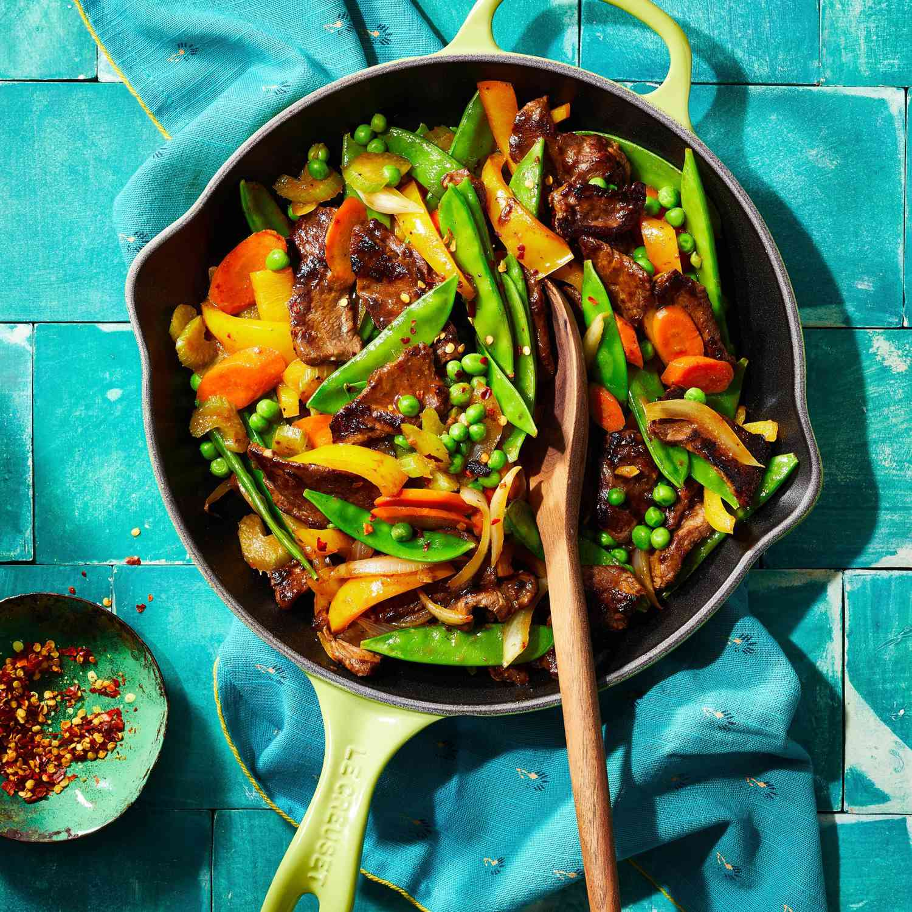

Filipino Beef Stir Fry

Description
This is an easy Pinoy recipe if you don't have much time. The beef can be sliced and marinated ahead of time making the meat even tastier. Eat the dish alone or serve with rice. Use a tender cut such as New York steak or prime rib.
Prep Time:
25 mins
Cook Time:
20 mins
Additional Time:
2 hours 45 mins
Servings:
4
Ingredients
- 1 pound New York strip steak, thinly sliced
- 2 tablespoons cornstarch
- 2 tablespoons soy sauce
- 1 ½ teaspoons white sugar
- 3 tablespoons olive oil, divided
- 1 medium sweet onion, chopped
- 2 cloves garlic, crushed
- 1 tablespoon oyster sauce
- salt and ground black pepper to taste
- 1 pound snow peas
- ¾ cup green peas
- 1 medium carrot, sliced
- 2 stalks celery, sliced
- 1 medium red bell pepper, seeded and cut into chunks
Directions
- Place sliced steak in a large bowl; sprinkle cornstarch over top and toss to coat.
- Whisk soy sauce and sugar together in a small bowl until sugar dissolves; pour over the steak. Mix and marinate in the refrigerator for at least 2 hours or overnight.
- Heat 1 tablespoon oil in a large skillet over medium heat. Add onion and garlic to the hot oil; cook and stir until tender, 5 to 7 minutes. Stir in oyster sauce and season with salt and pepper.
- Add snow peas, green peas, carrot, celery, and bell pepper; cook and stir until vegetables are crisp-tender, 7 to 10 minutes. Remove vegetables from the skillet.
- Remove steak from the marinade, shaking off any excess moisture; discard the marinade.
- Heat remaining 2 tablespoons oil in the same skillet. Fry steak in the hot skillet to your desired degree of doneness, 3 to 5 minutes per side for medium. Add the vegetables back to the skillet; mix well and cook until just heated through. Serve hot.
Check out these ingredients, too: